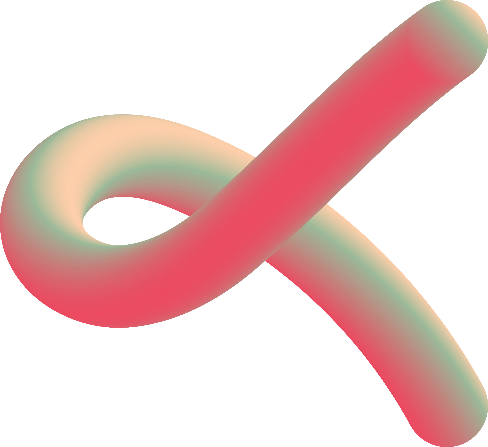
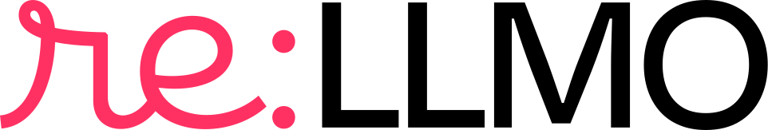
Radim Kracík · re:LLMO a Effectix
Co umí dobře, kde dělají slop a proč to nejde opravit.
Velký model v grafickém editoru přes MCP. Vrstvy, text, úpravy.
Stejný princip, jiný nástroj. Opus 5.5 umí ffmpeg.
AI slop.
Rychlé, levné, vygenerované.
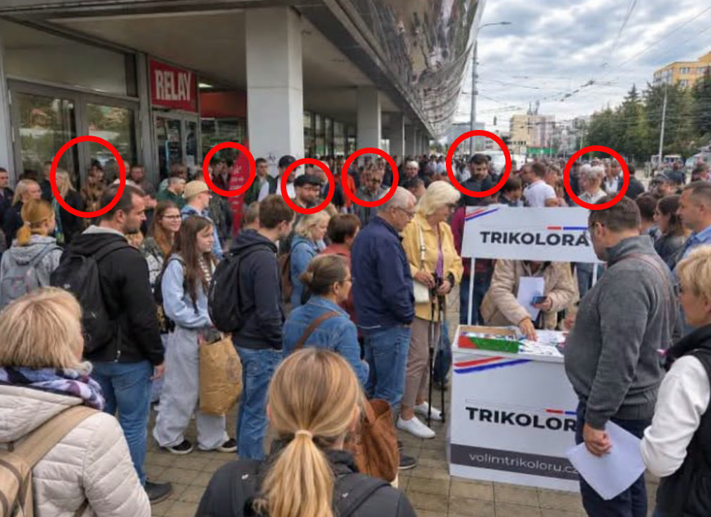
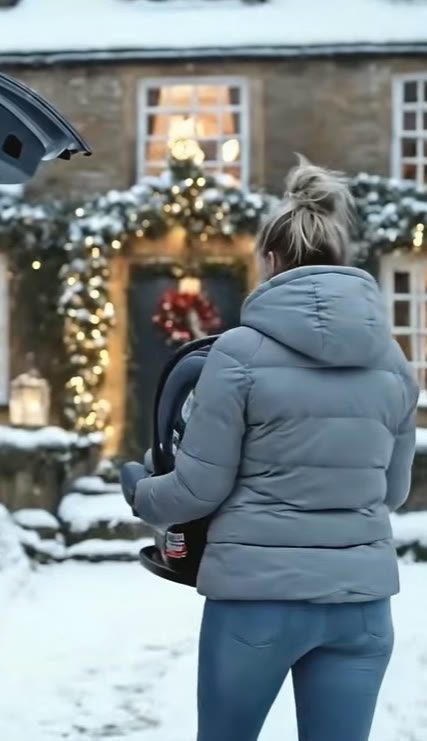
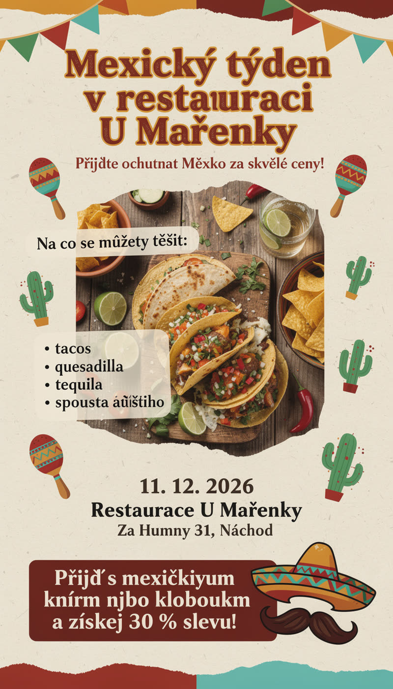
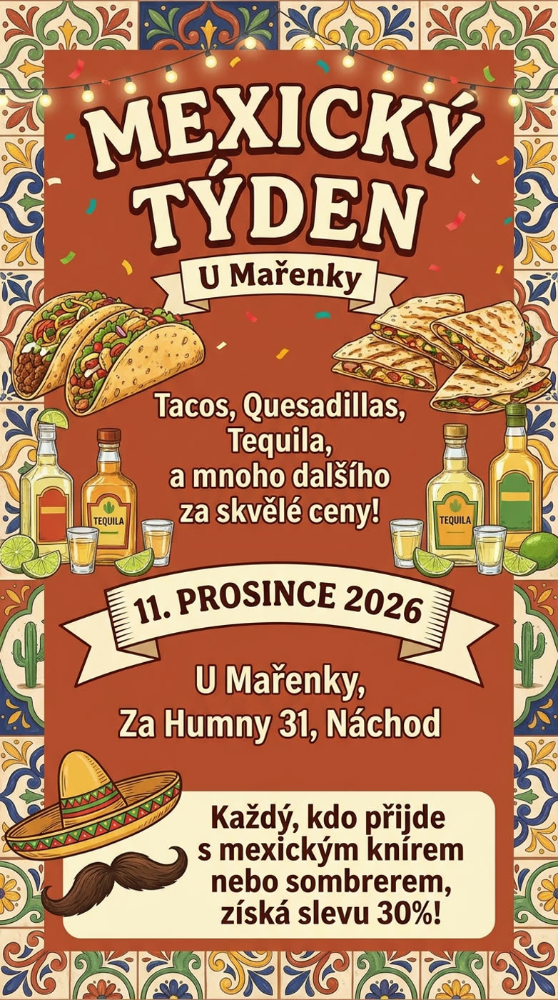
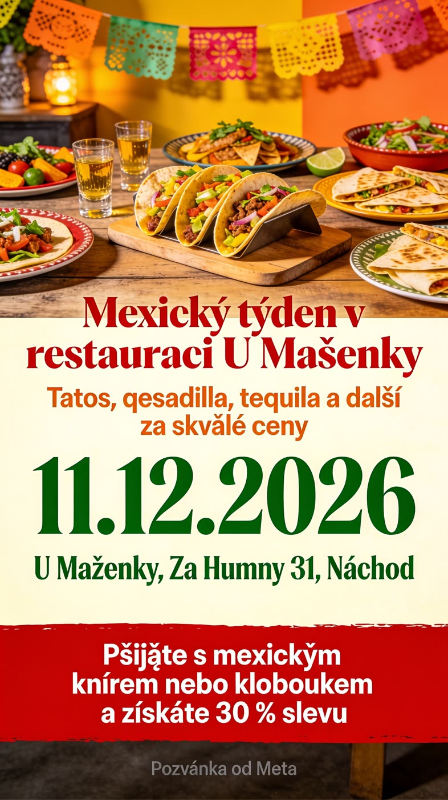
Prompt: banner na výšku pro Meta, pozvánka na Mexický týden v restauraci U Mařenky.
Tacos, quesadilla, tequila, 11. 12. 2026, Za Humny 31, Náchod. S knírem nebo kloboukem sleva 30 %.
Je to možnost úprav. Pokaždé je nutné obrázek přegenerovat.
Kvůli jednomu písmenu.
Každá změna je další generování a další čekání.
I za ty, které zahodíš.
Výsledek nikdy není ten, který jsi schválil.
MCP do grafických programů. Model neskládá pixely, ale vrstvy, text a tvary. Každý prvek jde dodatečně posunout.
Jenže staré modely dávaly hnusné výstupy. Jako žák páté třídy v Malování.
Ale dneska tady máme nové modely.
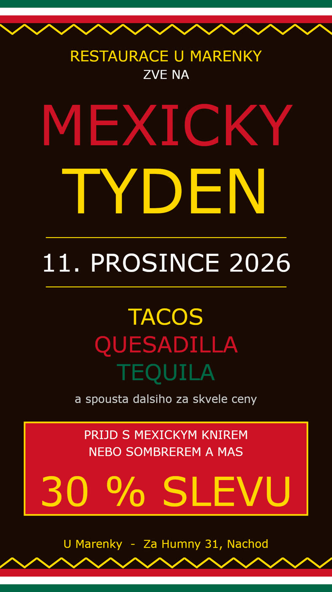
První model, který v grafickém editoru složil kreativu, za kterou se nemusíš stydět.
Totéž, a navíc drží kompozici a hierarchii textu.
Modely mají mnohem lepší vizuální chápání. A možná cosi jako estetické cítění.
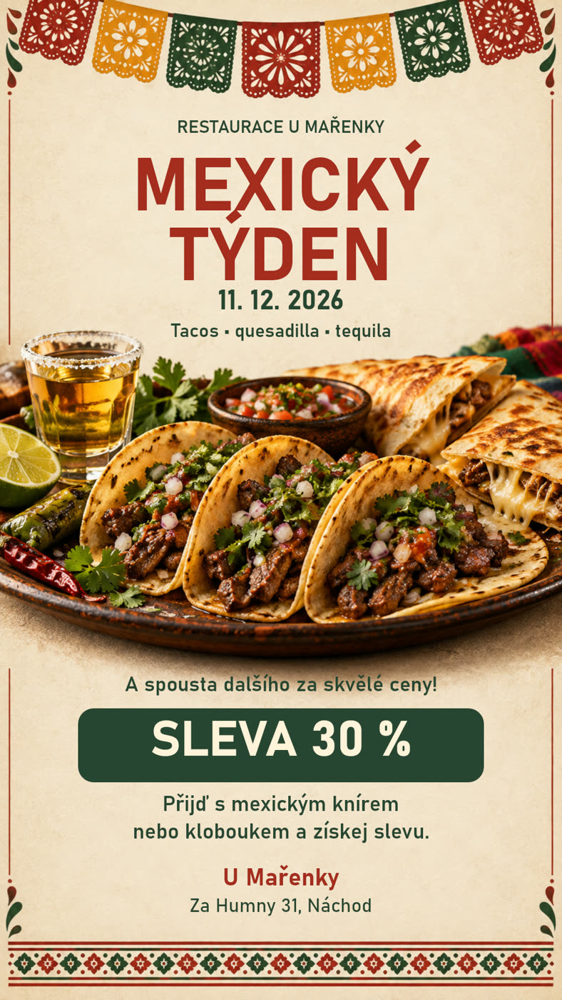
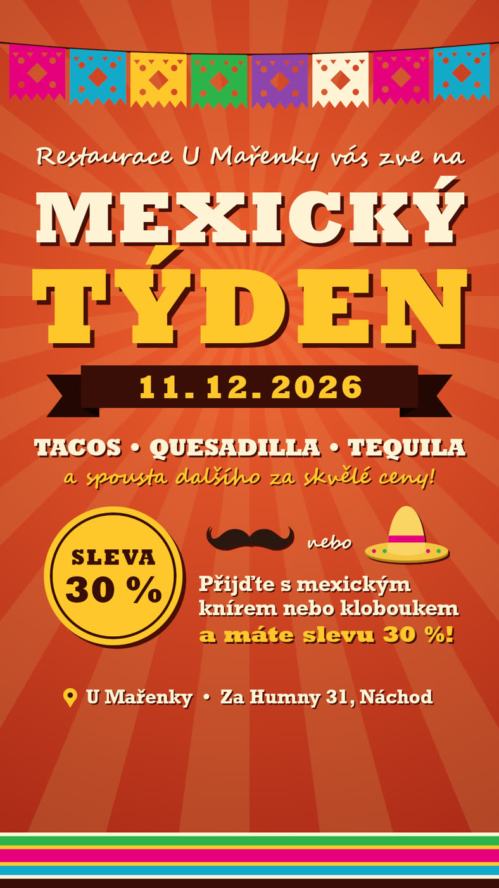
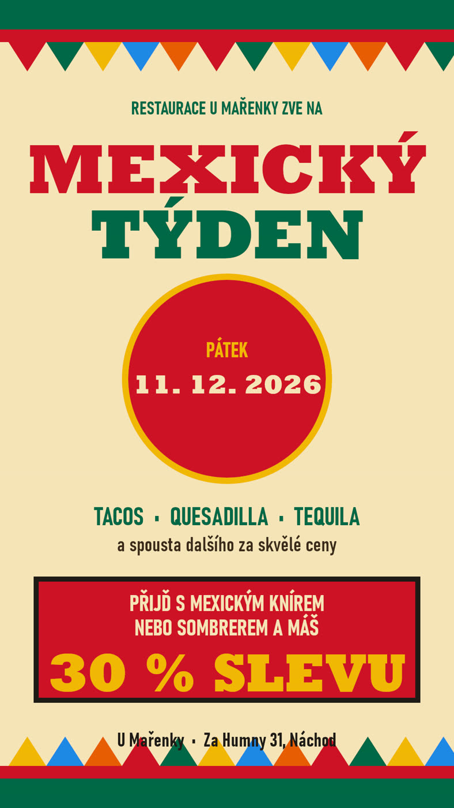
Bez brand guidelines, bez podkladů. Každý prvek je samostatná vrstva, text je text.
Dáme tomu guidelines. Třeba bezpečný čtverec kreativ pro Meta: sdělení musí přežít ořez na 1:1, okraje jsou jen dekorace.
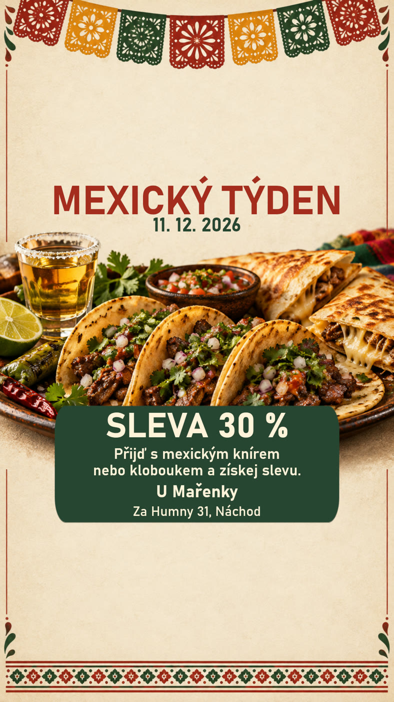
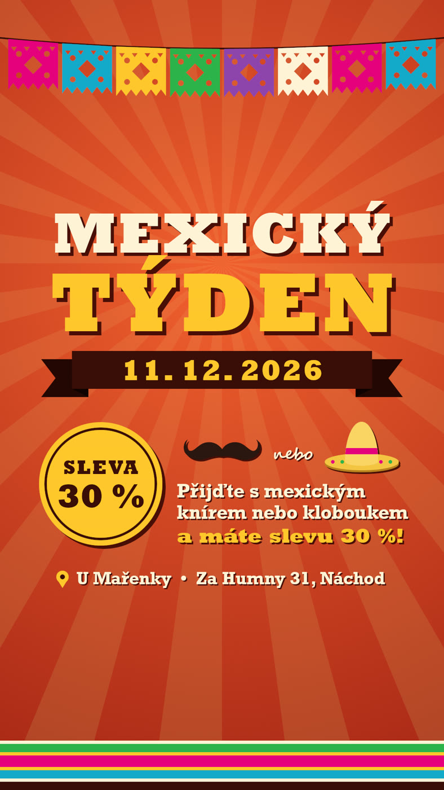
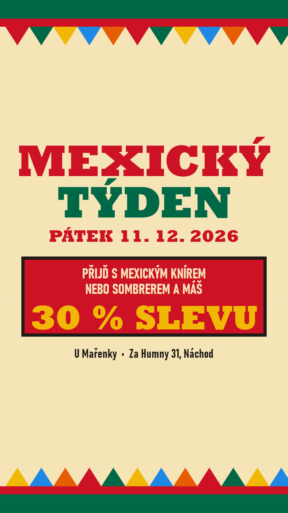
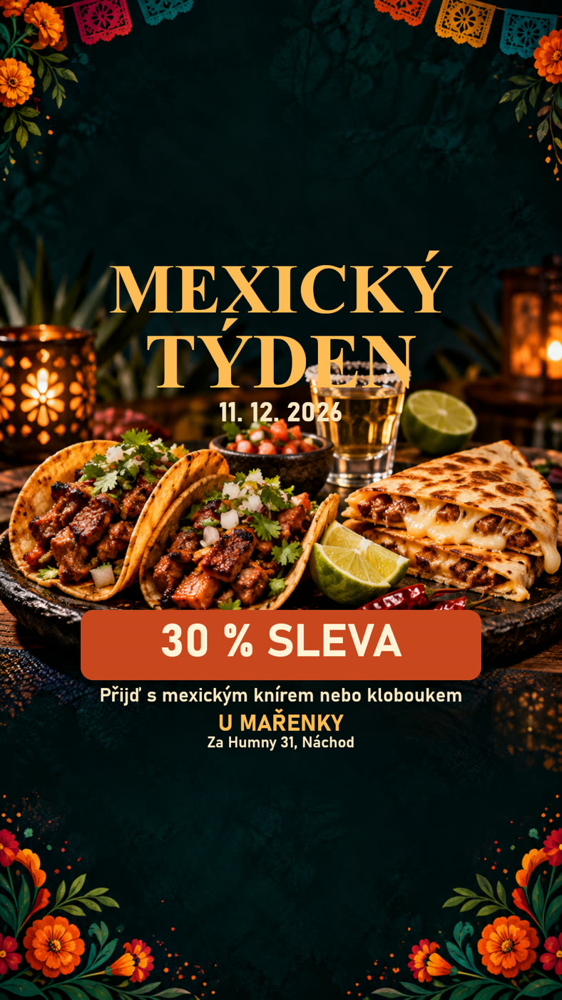
Stejné vrstvy, jiné rozložení. Žádné nové generování.
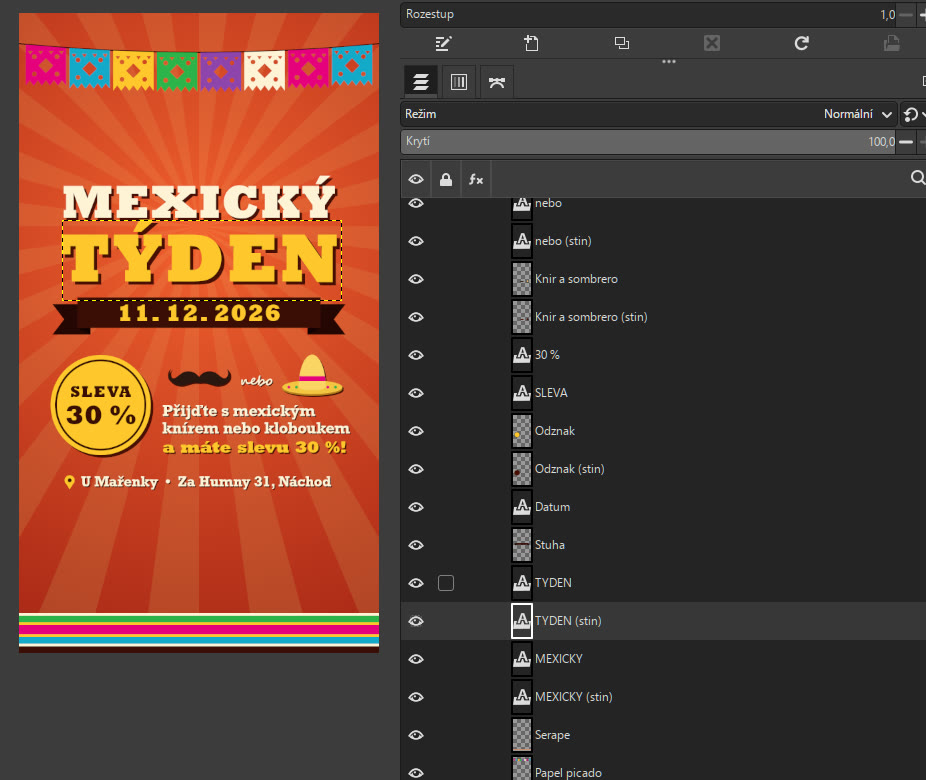
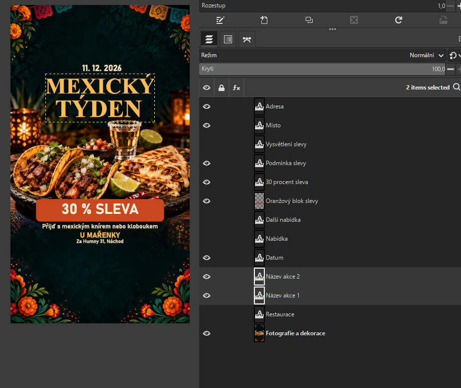
Model nemaluje. Posouvá vrstvy, mění velikost písma, skrývá, co se nevejde. Přes MCP z Claude Code.
Model, který vidí výsledek a umí volat nástroje.
Klidně open source. GIMP stačí.
Most mezi modelem a editorem. Vrstvy, text, export.
Brand guidelines, logo, fotky, elementy, nápad, instrukce.
Bez podkladů model vymýšlí. S podklady skládá.
Nebát se toho.
Stejný princip. Model neskládá pixely, řídí nástroj. Tím nástrojem je ffmpeg.
Open-source „švýcarský nůž“ na video a zvuk z příkazové řádky. Střih, formáty, titulky, mix zvuku. Zdarma, běží všude.
Napíše příkazy nebo skript, spočítá časování, spustí render, podívá se na výsledek a opraví. Opus 5.5 to umí.
Knihovna neví, kdy začíná věta. Model drží celou časovou osu: záběr, hlas, titulek, hudba, na setinu sekundy.
ffmpeg -i zaber.mp4 -i voiceover.mp3 -i hudba.mp3 -filter_complex "[2:a]volume=0.15[h];[1:a][h]amix[a];[0:v]scale=1080:1920,subtitles=titulky.ass[v]" -map "[v]" -map "[a]" -shortest spot-9x16.mp4
Natočené, ne generované. Jistota, že tam nebudou artefakty generování.
Vyplatí se zaplatit ElevenLabs. Vybrat hlas, připojit přes MCP, nechat vyrobit.
Časování z přepisu, font a barva podle brandu. Model je vyrenderuje přímo do videa.
ElevenLabs nebo Suno. Model ji ztlumí pod hlas a ukončí se střihem.
Obrovská výhoda: časování a synchronizace. Hlas, titulky a střih sedí na setinu sekundy.
U videa to platí už dnes. Záběry, hlas, hudba, brand. A ffmpeg. Zbytek je práce modelu.
Fotky a videa od klienta, hlas Tomáš z ElevenLabs, hudba ElevenLabs, titulky podle slov, kolotoč produktů. 32 s, celé z ffmpeg.
Animovaná mapa z GeoJSON, logo, hlas Zdeněk z ElevenLabs, hudba, časování z přepisu. 44 s, Python + ffmpeg.
Už to není o promptu. Je to o harnessu.
Stejně jako v jiných oborech. Dejte modelu informace, podklady, kontext a nástroje. Prompt je pak detail.
Jen prompt. Výsledek: slop, překlepy, nic se nedá upravit.
Prompt a nástroj. Výsledek: vrstvy, text je text, dá se přepsat.
Prompt, nástroj, podklady a pravidla. Výsledek: model to přeskládal sám.
Prompt se za celou dobu nezměnil. Měnil se harness kolem něj.
To je mnohem rizikovější.
Šest prstů, mizející předměty, jiná tvář v každém záběru. Ohlídat to ručně je náročné.
Popíše každý snímek, srovná záběry mezi sebou, vyhodí ty s chybou a zadá generování znovu.
Je dnes hodně aktuální. Popsal ho Masahiro Mori už v roce 1970.
Masahiro Mori, 1970. Čím podobnější člověku, tím sympatičtější. Až do chvíle, kdy je to skoro člověk.
Tam sympatie spadnou do záporu. A přesně na kraji tohohle údolí dnes sedí AI video.
Dole v údolí existuje jeden extrém, který vydělal filmařům hodně peněz.
Co to je?
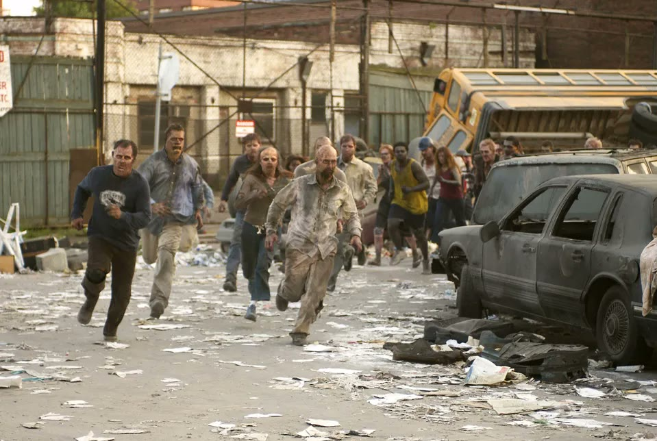
Úsvit mrtvých (Dawn of the Dead, 2004)
Negenerujte zombíky.
Produkt, prostředí, animace: ano. Lidské tváře a ruce v pohybu: jen když to opravdu ohlídáte.
Ne na finální kreativu. Problém není styl, ale úpravy.
Vrstvy a text místo pixelů. Změna za vteřiny, ne nové generování.
Guidelines, logo, fotky. Pak se nebát ani videa.
radim.kracik@effectix.com · re:LLMO a Effectix